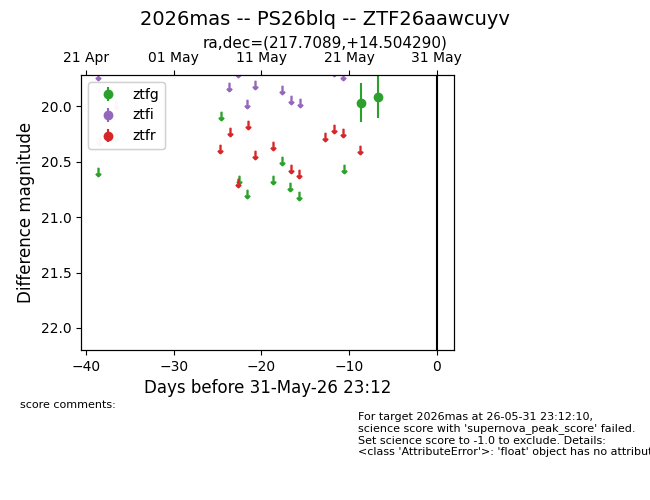
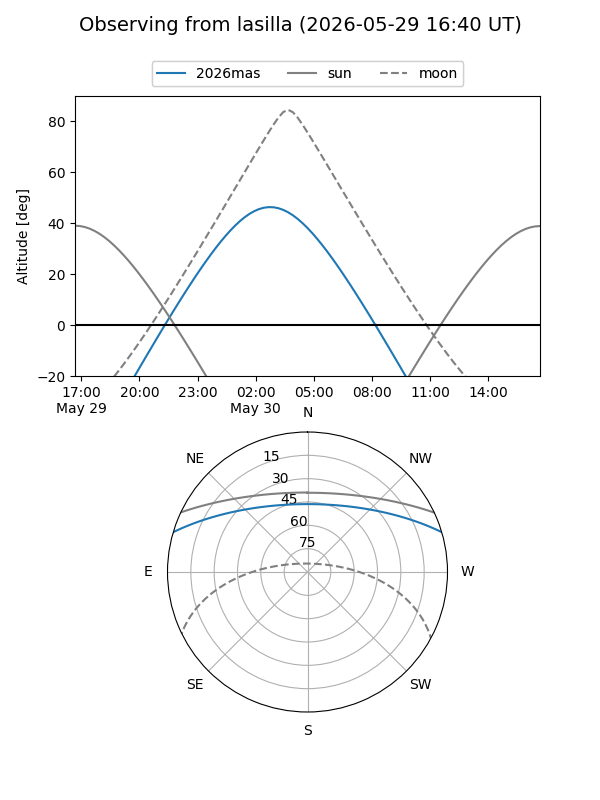
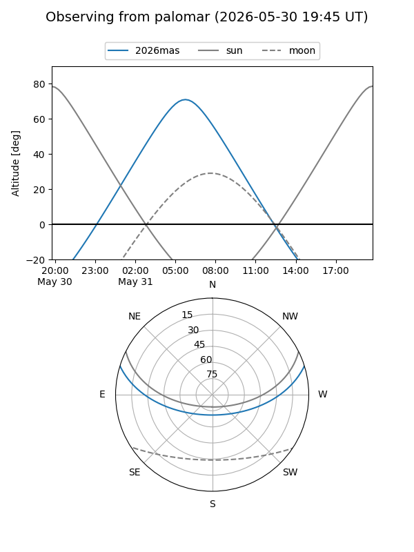

2026mas
Target 2026mas at 2026-05-31 23:14
Aliases and brokers:
lsst-FINK: link
lsst-Lasair: link
lsst-ALeRCE: link
ztf-FINK: link
ztf-Lasair: link
ztf-ALeRCE: link
TNS: link
YSE: link
alt names
ZTF26aawcuyv (ztf,fink_ztf)
2026mas (tns,yse)
PS26blq (panstarrs)
Coordinates:
equatorial (ra, dec) = 217.7089,+14.50429
equatorial (HMS+DMS) = 14:30:50.13,+14:30:15.44
galactic (l, b) = (9.3396,+63.64394)
Flags:
TNS confirmed: nan
Photometry:
last ztfg=19.92
2 ztfg detections
Lightcurve

Visibility


Additional plots